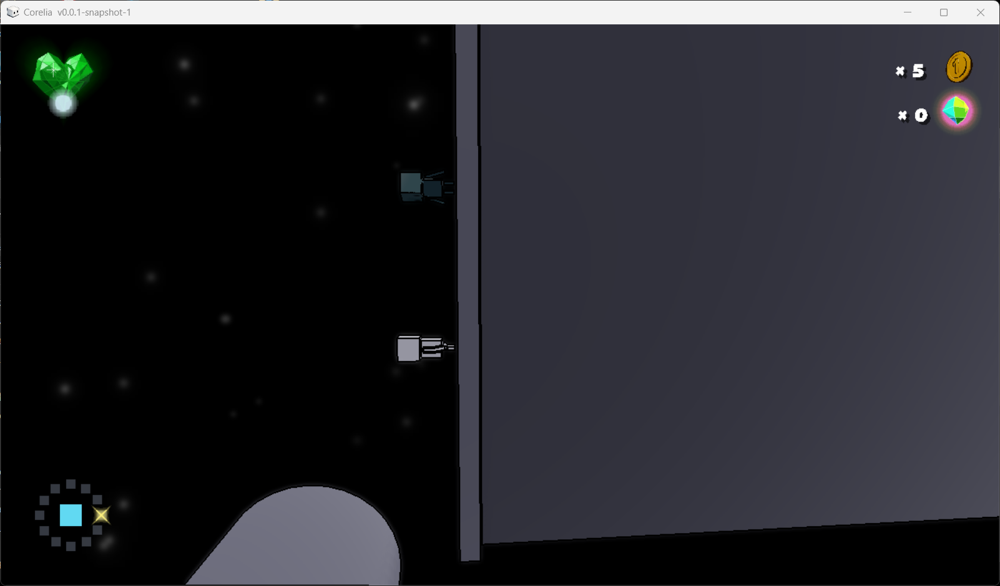
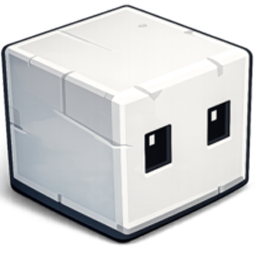
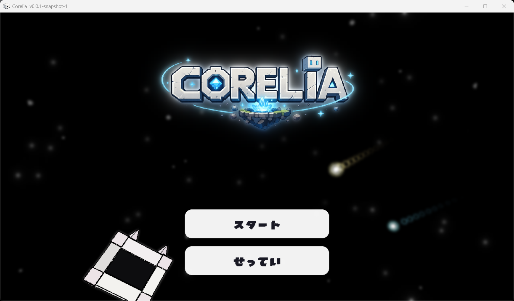
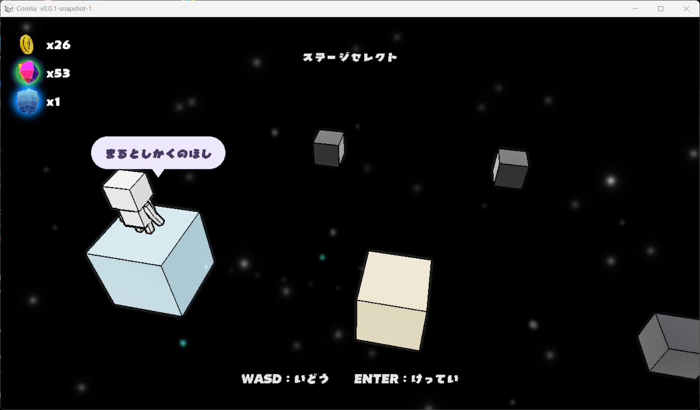
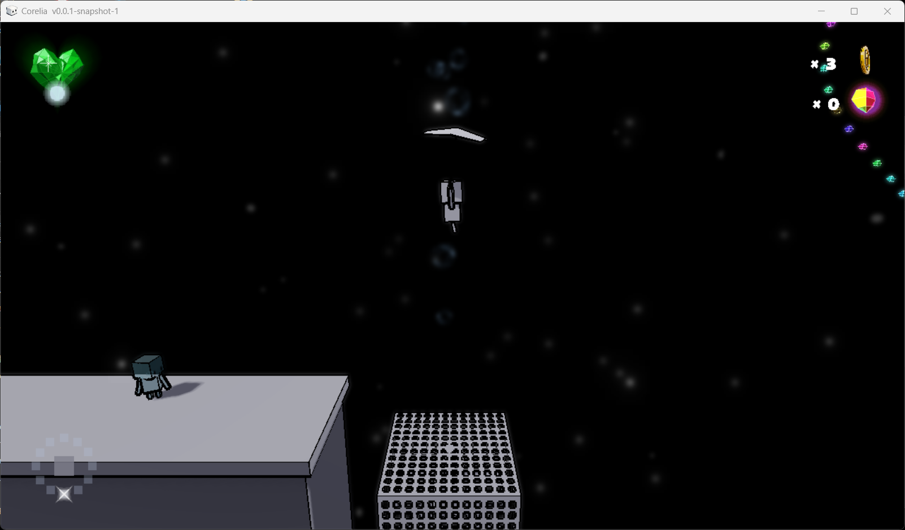
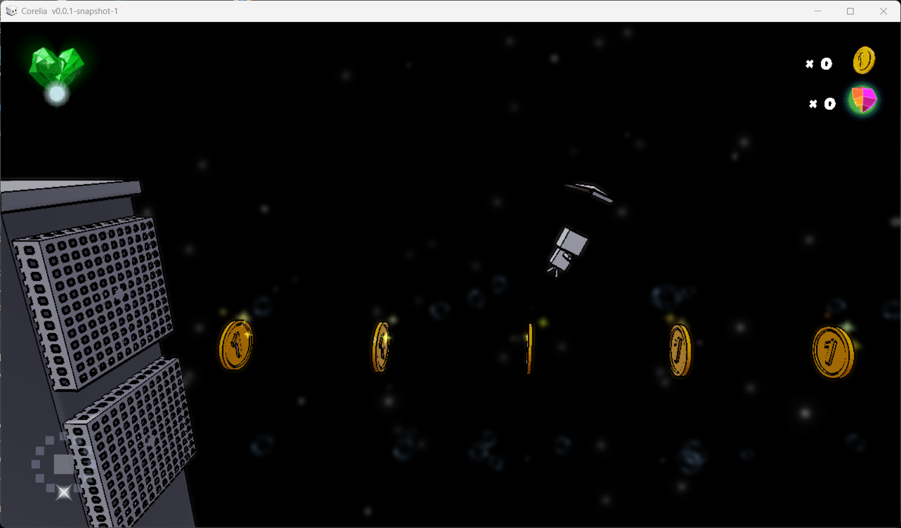
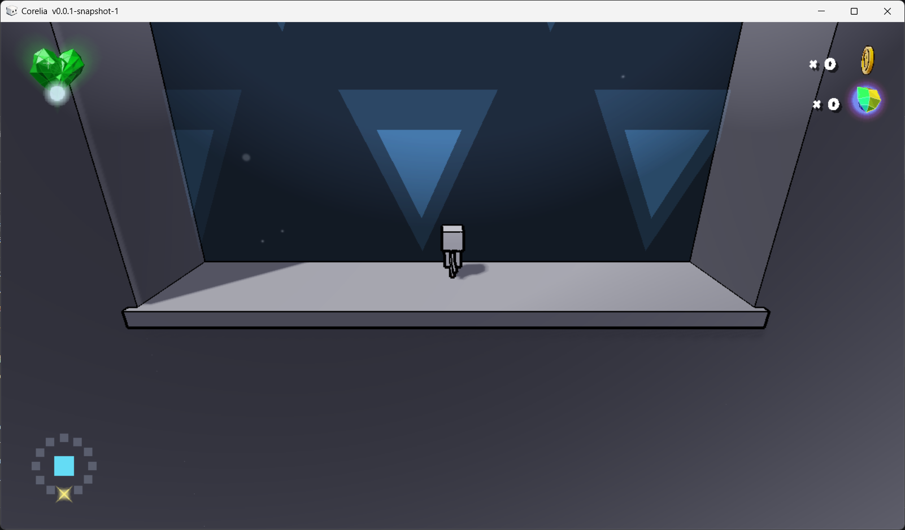
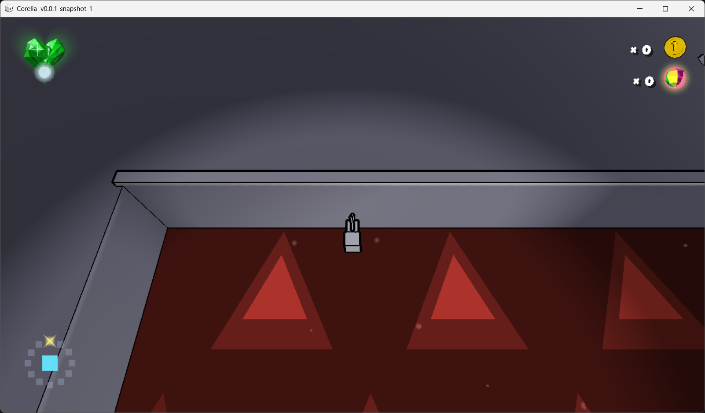
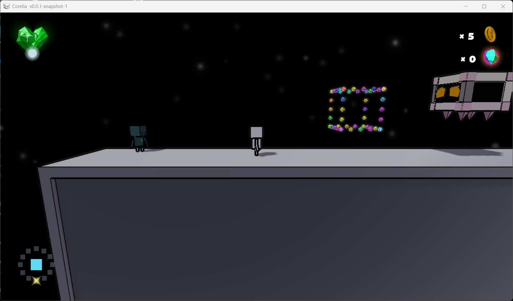
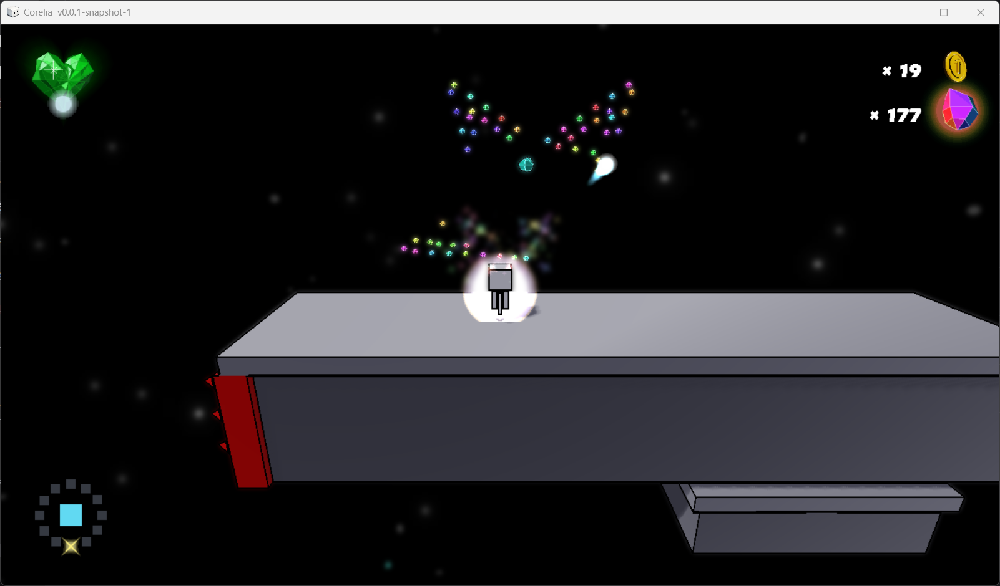

Corelia ― 取扱説明書
遊び方ガイド ／ 操作・重力・コアリアの助け方
1
① このゲームについて
コンセプト：「上下も左右も関係ない。惑星の“重力”を味方にして冒険する」
ストーリー
- 星々に散らばった小さな種族 コアリア。
- プレイヤーは重力を乗りこなし、惑星をめぐる冒険へ出発する。
- マップ各所にいるコアリアに話しかけると、ヒントをくれる。
ゲームの目的
- 各ステージの ゴール を目指して惑星を進む。
- 重力を乗りこなし、丸い惑星／箱の惑星の表面を歩いたり飛んだりする。
- 敵をかわし・倒し、アイテムを集めながらクリアを目指す。
やさしい操作で、宇宙を“ころころ”冒険するアクションです。
2
② 基本操作
キーボード＆マウスで遊びます。まずはこの表を覚えればOK。
| 移動 | A D W S で惑星の表面を歩けます（W／Sは会話・メニューの選択にも使用） |
|---|
| ダッシュ | Shift 長押しで加速。ダッシュしたまま跳ぶと飛距離アップ |
|---|
| ジャンプ | Space（地上で）。惑星の“真上”へ跳びます |
|---|
| パラソル | ジャンプ中に E で開く → 風に乗って滑空 |
|---|
| 岩を集める | カーソルをカラフル岩に近づける（ホバー）だけで吸い寄せられます |
|---|
| 重力を変える | マウスホイールで重力を切り替え（手動重力ゾーン内でのみ使用可） |
|---|
| 話す | コアリアに近づいて W |
|---|
| ポーズ | TAB でメニューを開閉 |
|---|
3
③ 移動とアクション
「走る・跳ぶ・浮く・撃つ」を組み合わせて進もう。
走る・跳ぶ
- ダッシュ：Shiftで速く動く。段差を越えたい時に。
- ダッシュジャンプ：ダッシュのまま Space → いつもより遠くまで跳べる。
- ジャンプは常に足元の惑星から見た“真上”へ。だから逆さでもちゃんと跳べる。
浮く・集める
- パラソル：跳んだあと E でふわっと滑空。横からの風にも乗れる。
- タイミングを間違えると落下するので、風をよく見て開こう。
- 岩：カーソルを近づける（ホバー）だけで吸い寄せられて集まる。
パラソルはジャンプの頂点あたりで開くと一番遠くまで飛べます。横風の惑星では、風が吹く向きに合わせて開くのがコツ！
4
④ 重力のしくみ
このゲームの一番の特徴。地面は“下”じゃなく、惑星の中心にあります。
惑星に張り付く
- 丸い惑星にはぐるっと一周歩けます。天井も壁もありません。
- 箱の惑星は面から面へ。角をこえると“上”の向きが変わります。
- 惑星から離れすぎると引力が弱まり、ふわっと宇宙へ離脱。
※ 重力の向きを切り替えられる手動重力ゾーンの詳しい使い方は ⑪ 画面ガイドを参照。
● プレイヤー
↑ 「上」＝惑星の外向き
│
▼ 重力＝惑星の中心向き
(●) 惑星の中心
どんな惑星でも考え方は同じ。足元の惑星のほうが「下」で、
その反対が「上（ジャンプの向き）」になります。
向きが変わっても操作は A D のまま。体が自然に回り込みます。

STICK
ボコっとした壁や床にも
足がつけられる
でこぼこした壁や床も、地面と同じように重力に引かれて足がつきます。
これも重力のしくみのひとつ。ただしよく見ずに進むと危険な場所もあるので注意しましょう。
5
⑤ コアリアと残りライフ
仲間コアリアはヒントの宝庫。そして“残機”もコアリアです。
コアリアに話しかける
- マップに落ちているコアリアに近づくと 「Ｗ 話す」 の吹き出しが出ます。
- W で会話開始。カメラが寄ってじっくり聞けます。
- 会話中は W／S で送り、Enter で進めます。
- 操作のヒントや、次に行く場所を教えてくれます。
残りライフ（コアリア）

ステージ内でやられると ライフが1つ減少。
3回やられるとゲームオーバーです。
- ゲームオーバーでは リトライ／ステージ選択／タイトル を選べます。
- やられても直前のチェックポイントから再開できます。
迷ったらまずコアリアを探して話しかけるのが近道。ヒントを聞けば、次にやることがハッキリします。
6
⑥ アイテムと敵
集めるもの
- 緑のエメラルド：敵を倒すと落とすことがある。回復・スコアに。
- カラフルな岩：マップに置かれた収集アイテム。マウスカーソルを近づけるだけで吸い寄せられて集まる。
- 重力コア：惑星に眠るエネルギーのかけら。集めてコレクションを増やそう。
気をつける敵
- キューブン：踏みつぶし攻撃が脅威。真下は危険！
- 動く床・横風など、地形そのものもワナになる。焦らず観察を。
- あわてず動きを見てから間合いを取るのが安全。
キューブンは正面からより、ジャンプや岩を使って崩すのが安全。踏まれる前に間合いを取ろう。
7
⑦ ゲームの流れ ＆ こまったとき
ゲームの流れ
- タイトル → ステージ選択（ハブ）→ ステージへ出発
- 惑星を進み、ゴールに到達すればクリア。
- クリア成績（コイン／コア／タイム）が記録されます。
- いつでも TAB のポーズから設定・ステージ選択へ。
こまったとき
- 進めない → 近くのコアリアに W で話す。
- 高い所へ届かない → ダッシュジャンプ＋パラソルを使う。
- 別の足場へ行きたい → 手動重力ゾーンで マウスホイールを回して重力を切り替える。
- 音量・フレームレート・解像度 → TAB → 設定メニューで調整（操作キーは変更できません）。
- 最新版にしたい → 設定メニュー最下部の「アップデート」で決定 → 新しい版があれば自動でダウンロード・適用されます。
さあ、出発！ 重力を味方に、コアリアたちと一緒に宇宙のすみずみまで冒険しましょう。
8
⑧ 画面ガイド ― はじめかた
起動するとタイトル画面。「スタート」で冒険へ、「せってい」で調整。
タイトル画面

MENU
スタート：冒険を始める
せってい：音量・フレームレート・解像度・アップデート
左下のキャラが主人公「あなた」。星々を旅する小さなキューブです。
ステージセレクト（ハブ）

あそびかた
浮かぶ星＝ステージ
WASD で選び Enter で出発
コアリアが星の名前（例：まるとしかくのほし）を教えてくれます。左上は集めたコイン／カラフル岩／重力コアの合計。
9
⑨ 画面ガイド ― プレイ画面のみかた
画面のまわりに、今の状態がまとまっています。

① 体力（エメラルド）
② コインの数
③ カラフル岩の数
④ 重力の向き表示
- ① 体力：ダメージで減少。緑エメラルドを取ると回復。
- ② コイン：集めた枚数。スコアになります。
- ③ カラフル岩：収集した数。カーソルを近づけて集める。
- ④ 重力の向き表示：足元に光る印が、今の重力方向を示す。
10
⑩ 画面ガイド ― 跳ぶ・飛ぶ
ファンの横風に乗って進んだり、頂点で E のパラソルに切り替えて遠くへ。
横風に乗って進む

WIND
ファンの横風に押されて
体が横に流される
ファンのあるエリアに入ると横風に押し流されます。風に乗ったまま並んだコインを回収しよう。
パラソルで滑空
PARASOL
ジャンプ中に E
風に乗ってふわりと滑空
頂点あたりで開くと一番遠くへ。横風にも乗れるので、風向きを見て開こう。
11
⑪ 画面ガイド ― 手動重力ゾーン
三角マークのゾーンに入ると、マウスホイールで重力の向きを切り替えられます。色は今の重力方向。
青 ＝ 通常重力（下向き）

GRAVITY ZONE
いつも通り下が重力の向き
ここでホイールを回すと反転
青い三角のときは通常の重力（下向き）。マウスホイールを回すと重力の向きが切り替わります。
赤 ＝ 反転重力（上向き）

REVERSED GRAVITY
重力が反転＝上が「下」に
同じゾーンでホイールを回すと元に戻る
赤い三角のときは重力が反転し、天井側が新しい「下」になります。同じゾーン内で色が切り替わるだけで、場所そのものは同じです。
12
⑫ 画面ガイド ― 敵・収集
敵を見分け、カラフル岩を集めよう。
キューブン（敵）

ENEMY
キューブン：踏みつぶし攻撃
に注意。真下は危険！
トゲトゲの殻を持つ敵がキューブンです。動きを見てから間合いを取り、ジャンプや岩で崩そう。
カラフル岩を集める

COLLECT
カーソルを近づけると
吸い寄せられて集まる
きらめくカラフル岩にマウスカーソルを近づけるだけで集まります。集めた数はHUDに表示されます。
13